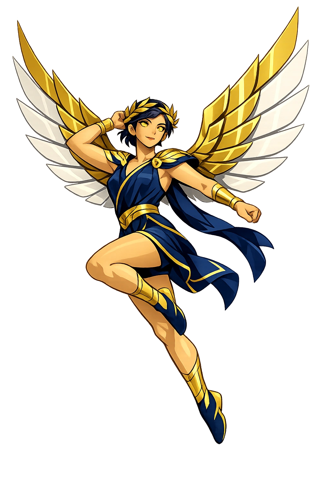

Stories of Níkē
Níkē has few independent myths because she is always elsewhere — on the battlefield, at the games, at the stern of the winning ship — arriving the instant struggle ends. Daughter of Styx, ally of Zeus, companion of Athēnâ: she is what every Greek competitor prayed to feel.
Hesiod (Theogony 383–403) explains how Níkē came to stand beside the throne of Zeus. When the war against the Titans began, the goddess Styx — angry that her father Oceanus had not fought — brought her four children to Zeus as allies: Zēlos (Rivalry), Níkē (Victory), Krátos (Power), and Bía (Force). 'These dwell always with Zeus the loud-thunderer,' Hesiod writes; 'for so Styx planned on that day when the Olympian Lightener called all the deathless gods to Olympus and promised that whoever fought with him against the Titans, he would not cast out from his rights, but each would keep the honor he had among the deathless gods.' Níkē's loyalty is thus original: she chose the winning side before anyone knew it would win. The same four flank Zeus's dais in the prologue of Aeschylus' Prometheus Bound. The myth is a charter for her whole nature: victory is not a prize Zeus hands out but a power that stands, winged and watchful, at the heart of his rule.
On the Athenian Acropolis, Níkē received her most famous home — as an aspect of Athens' own goddess. The little Ionic temple of Athena Nike (c. 427–424 BCE) stands on a bastion at the citadel's southwest edge, at the very point where the procession to the Acropolis first sees the city spread below — victory and the polis framed in a single view. Its frieze shows gods and Athenians in battle, and its parapet, carved after 410, shows Níkē herself pausing to adjust her sandal, erecting trophies, leading bulls to sacrifice (Pausanias 1.22.4). The cult fused the abstraction with the patroness: one did not win despite the gods but through them. After Salamis and Plataea — victories that seemed like proof of divine favor — the temple made the claim architectural: Athens' triumphs were Athena's triumphs, and Níkē their visible crown. The smallest temple on the Acropolis carries the largest message: winning is sacred.
The Athenians kept another image of Níkē — one deliberately crippled. Later antiquarians report a 'wingless Victory' (Níkē Ápteros) in the city, whose wings had been removed or never granted, on the rationale that victory must never be allowed to fly away from Athens; Callimachus was even credited with the winged type that the wingless image answered. The tradition is tangled — the wingless image may be a confusion with other cities' unwinged Victories, and scholars have argued both ways for a century — but the anxiety it records is real and panhellenic: victory is the most fickle of gods. Pindar's epinician odes voice the same fear at the moment of triumph, reminding victors that 'mortal things befit mortals' (Isthmian 7.16–17) and that the god who exalts also watches. A Níkē nailed down to the soil is the Greeks' most honest monument: you cannot keep victory, but you can build a shrine to the hope of keeping it.
After Alexander, Níkē became the portrait of empire. She crowns the conqueror on the coins of Lysimachus; she hovers great-winged over the gods' battle with the Giants on the altar of Pergamon; and she stands on the prow of a Rhodian warship in the Winged Victory of Samothrace (c. 190 BCE) — probably celebrating a naval victory over the Seleucids, found where she once rose above the theater of the sanctuary of the Great Gods. Rome adopted her as Victoria: her Palatine cult, said to reach back to Evander (Virgil, Aeneid 8.337–341), and her image on every triumphal issue made victory the engine of imperial messaging — generals sacrificed to her before battles and raised shrines after triumphs. The winged figure outlived the empires: Christian art borrowed her wings for its angels, and later ages raised her over the Bastille and over Olympic podiums. Victory is the most portable of all the gods — every regime mints her, and every regime learns she flies.
Triumph in War, Athletics, and Contests
Níkē is not merely a personification; she is the divine power of winning. She stands beside Zeus, Athēnâ, and athletes, crowning the victor with laurel or fillet. In a culture that made competition the organizing principle of politics, athletics, and warfare, Níkē was everywhere — and never to be trusted to stay.
She descends at the turning of battle; Hesiod has her dwelling always beside Zeus's throne since the Titanomachy.
Every Panhellenic crown — Olympia, Delphi, Isthmia, Nemea — was a victor's moment of Níkē made visible.
She is often winged, swift as rumor, bringing news of victory across land and sea.
As Athena Nike she holds her own temple on the Acropolis — the most famous victory cult in Greece.
From the original script to the living URL
Νίκη
The name in its original Greek form. Níkē (Νίκη) is attested in the source tradition — “Victory, conquest”. Its long vowels and acute accents carry the full phonetic and orthographic weight of the source tradition.
nike
Reduced to plain nike, the name loses everything that made it specific: long vowels and acute accents. What remains is an ASCII string that machines can parse but that no longer speaks with its original voice.
Níkē
The Unicode restoration recovers what ASCII flattened. Níkē restores long vowels and acute accents, returning the name to its original written dignity. The domain encodes to Punycode, but the browser displays the truth.
Níkē.com → xn--nk-nja7m.com
The non-ASCII characters in Níkē are encoded while the ASCII remains visible. To the DNS, it is Punycode. To humanity, it is Níkē.
Owned, ideal, and ASCII forms of Níkē
Níkē
Restores Νίκη. The live temple domain — níkē.com.
Nikē
Restores Νίκη. A second live spelling — nikē.com.
nike
Flattens Νίκη. The plain ASCII fallback — what DNS and legacy systems see.
How Níkē was spoken
How Níkē travels from ancient script to the modern URL
Greek Νίκη; from νίκη “victory"; the personification of victory.
Victory
The Unicode restoration Níkē preserves Greek stress and length; the ASCII form nike loses these features.
Níkē is the goddess of the decisive moment. She does not fight; she arrives when the fighting is done. She is not effort but its recognition, not struggle but its resolution. That is why the Greeks made her winged: victory is swift, and it can disappear just as quickly — the wingless statue at Athens is the confession that everyone who wins understands.
Enter Extended Lore